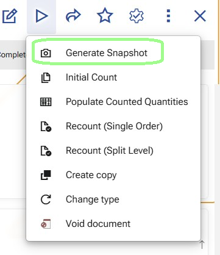

Generate Snapshot
Use Generate Snapshot to create the initial reconciliation Details from the current warehouse availability.
This function takes the warehouse scope defined in the Warehouse Reconciliation document and creates the rows that will later be counted, reviewed, and recounted if needed.
The generated snapshot is the momentary picture of the warehouse availability at the exact time when the function is executed. It is the reference point against which the counted result is later compared.

When to use it
Run this function after the reconciliation scope is prepared and before any counting starts.
At this stage, the user has already:
- created the Warehouse Reconciliation document;
- selected the warehouse in the document header;
- defined the counting scope through the reconciliation lines.
What the function uses as input
The function uses:
- the selected Warehouse from the document header;
- the selected Warehouse Zones and/or Warehouse Locations from the reconciliation lines;
- the current records in Warehouse Availability.
The scope is built from the reconciliation lines as follows:
- if a line contains a Warehouse Zone, the function includes all warehouse locations under that zone according to the zone hierarchy;
- if a line contains a Warehouse Location, the function includes that exact location;
- if a line contains both Warehouse Zone and Warehouse Location, the function uses the Warehouse Location;
- if only the Warehouse is selected and no narrower scope is defined in the lines, the function uses all warehouse locations in that warehouse.
How the function prepares the scope
Before reading the availability, the function resolves the final set of warehouse locations that belong to the reconciliation scope.
This includes deduplication of the locations coming from the selected zones and locations.
The purpose of this step is to produce one clean counting scope without overlapping locations.
What the function creates
After the warehouse scope is resolved, the function reads the current records from Warehouse Availability for:
- the selected warehouse;
- and the warehouse locations included in the final deduplicated scope.
It then creates rows in Warehouse Reconciliation Details.
A separate detail row is created for each availability position in the selected scope. This means that the snapshot is created not only by location and product, but also by the tracked characteristics that distinguish separate availability positions.
These characteristics include:
- location;
- product;
- lot;
- variant;
- serial number;
- logistic unit.
How quantity fields are populated
For each generated detail row:
- SnapshotQuantityBase is taken from
WarehouseAvailability.QuantityBaseAvailable; - SnapshotQuantity is taken and converted from
WarehouseAvailability.StandardQuantityAvailable - QuantityUnit is the product’s default measurement unit;
- CountedQuantityBase and CountedQuantity remain empty.
This keeps the snapshot both in base quantity and in the product’s default measurement unit.
How the other detail fields are populated
For each generated row, the function fills the reconciliation detail with the warehouse and tracking data from the matching availability record.
The generated detail includes:
- the current Warehouse Reconciliation document;
- Warehouse Location;
- Warehouse Zone;
- Product;
- Lot;
- Variant;
- Serial Number;
- Logistic Unit;
- Base Unit;
- SnapshotDateTime;
- ReviewStatus;
- Session.
At snapshot generation:
- SnapshotDateTime is set to the current moment;
- ReviewStatus is set to Created;
- Session is set to 0;
- LastAggregatedAt remains empty.
What happens for locations with no availability
If a warehouse location is part of the selected scope but has no availability records, the function still creates a reconciliation detail row for that location.
In this case, the row is created with:
- the Warehouse Reconciliation document;
- the Warehouse Location;
- the Warehouse Zone;
- SnapshotQuantityBase = 0;
- SnapshotQuantity = 0;
- SnapshotDateTime = now;
- ReviewStatus = Created;
- Session = 0.
The remaining product-specific and tracking fields stay empty.
This ensures that empty locations are still included in the reconciliation and can later be counted.
Running the function again
If the snapshot is generated again before the counting process has started, the existing reconciliation details are replaced with a new snapshot based on the current reconciliation lines and the current warehouse availability.
What users should expect after the function finishes
After Generate Snapshot is completed:
- the reconciliation contains the detailed rows that define what will be counted;
- each row contains the expected availability at the time of generation;
- the rows are ready for the next operational step.
Important
Because the snapshot captures the expected warehouse availability at a specific moment, the selected scope should remain free from warehouse movements after the snapshot is generated and before the counting process is completed.
What changes in the reconciliation details
When Generate Snapshot creates the reconciliation details, each new row starts with:
- Session = 0
- ReviewStatus = Created
This marks the row as part of the generated snapshot, before any counting session has started.
Note
For an overview of how Session and ReviewStatus change throughout the process, see Sessions and review statuses.
The next operation is usually Initial Count. In targeted scenarios, users can continue directly with Generate recount orders.